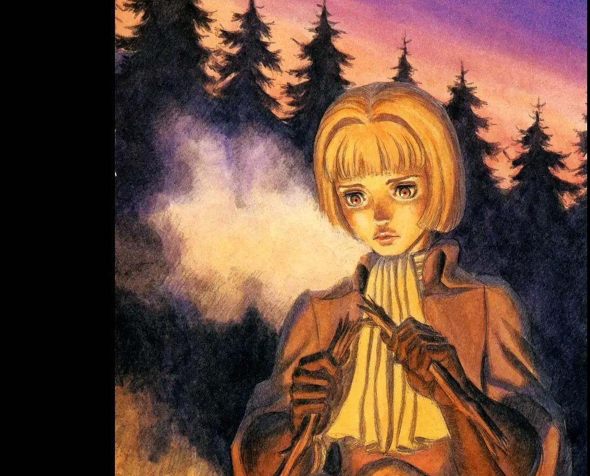

Guts
Guts é o principal protagonista de Berserk. Também conhecido como Espadachim Negro, Guts é um ex-mercenário e Ex-integrante do Bando do Falcão que sobreviveu ao Eclipse, atualmente um viajante com a marca do sacrifício no qual viaja pelo mundo em constantes conflitos entre alcançar seus objetivos e zelar pelos próximos a ele.
Casca
Casca é apresentada como uma bela mulher, de baixa estatura e musculosa, negra de olhos castanhos e cabelo preto curto. Em Pós-eclipse, sua aparência é alterada, seus cabelos crescem até na altura dos ombros e a Marca do Sacrifício é selada em seu peito esquerdo, após o eclipse ela apresenta perda de memoria e regressão de idade mental extrema.
Isidro
é um menino ladrão que é fugitivo e se juntou ao Guts e faz parte do Novo Grupo do Guts. Ele é um menino baixo e magro de pele bronzeada, cabelos ruivos. Ele usa um casaco marrom com mangas curtas por cima de uma camisa verde oliva com alguns buracos e uma calça cinza. Entorno das canelas amarrou umas bandagens e no punho também,em volta do braço esquerdo uma tecido vermelho.

Farnese de Vandimion
Farnese de Vandimion é um dos personagens principais e uma nobre da família Vandimion que liderou guarda cerimonial da Santa Sé, Os Cavaleiros das Sagradas Correntes de Ferro. Ela se tornou depois membro do Novo Grupo de Guts após um conflito entre ela e um apóstolo da mão de deus em que ela foi salva por Guts.

Schierke
Schilke é uma jovem "bruxa em treinamento", ela foi discípula da bruxa Flora. Ela é um dos membros do Novo Grupo do Guts, Schilke tem cabelo verde escuro e é magra, tem um tamanho aparentemente normal para sua idade, tem aproximadamente a mesma altura que Ishidoro, apresenta uma personalidade calma e gentil com todo grupo, especialmente com Guts.

Serpico
Serpico é um dos principais personagens da série. Ele é um servo da nobre Família Vandimion. Serpico faz parte do Novo Grupo do Guts juntamente com Farnese, erpico é um jovem com um corpo normal e cabelo loiro. Sua característica mais notável é que seus olhos estão fechados em quase todos os momentos, exceto quando a situação é grave. Ele é muitas vezes comparado a uma raposa por causa disso, além disso ele possui uma habilidade exepcional com a sua rapieira.

Skull Knigth
Skull Knigth é uma figura enigmática no mundo de Berserk, além de ser o autoproclamado “inimigo dos inumanos”, sua aparência assim como o nome sugere, é a de um cavaleiro vestido de uma enorme armadura de caveira, seu passado está envolto de mistérios, é revelado apenas que mantém uma relação ínfima com Flora.